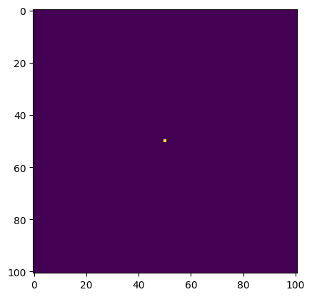
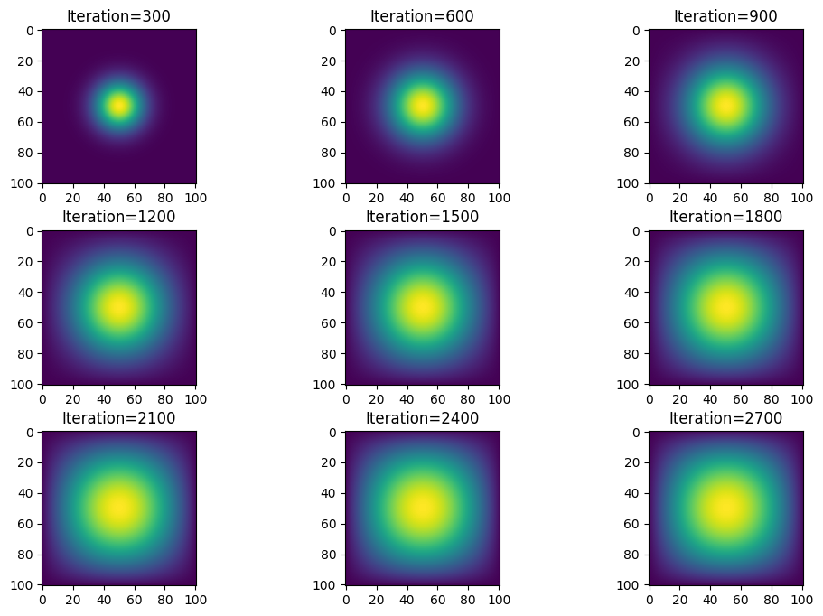
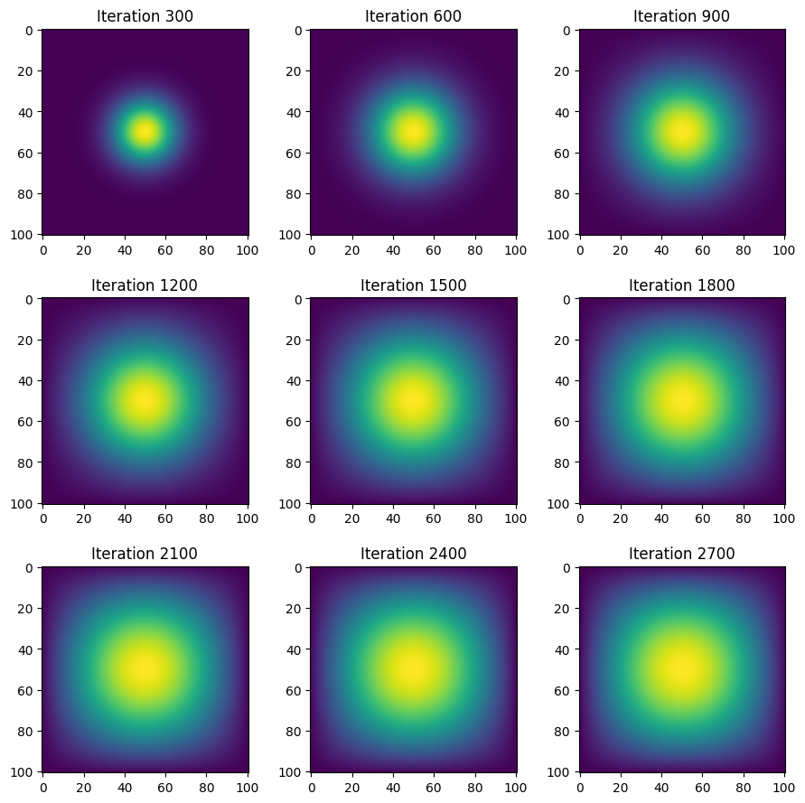

N = 101
epsilon = 0.2
import numpy as np
from matplotlib import pyplot as plt
import time
import jax
from jax.experimental import sparse
import jax.numpy as jnp
from jax import jit
import inspectHomework 4: Two-Dimensinal Heat Diffusion Simulation: Multiple Approaches
In this tutorial, four approaches of simulating a two-dimensional heat diffusion will be introduced: matrix multiplication, sparse matrix in JAX, direction operation with numpy, and with jax.
0. Basic Setting Up
Import Libraries:
# This is the initial condition
# Put 1 unit of heat at midpoint
u0 = np.zeros((N, N))
u0[int(N/2), int(N/2)] = 1.0
plt.imshow(u0)
Approach 1: Simulation With Matrix Multiplication
We will first uses matrix-vector multiplication to simulate the heat diffusion in the 2D space. The vector here is created by flattening the current solution: \(u_k^{i,j}\)
Each iteration of the update is given by:
def advance_time_matvecmul(A, u, epsilon):
"""Advances the simulation by one timestep, via matrix-vector multiplication
Args:
A: The 2d finite difference matrix, N^2 x N^2.
u: N x N grid state at timestep k.
epsilon: stability constant.
Returns:
N x N Grid state at timestep k+1.
"""
N = u.shape[0]
u = u + epsilon * (A @ u.flatten()).reshape((N, N))
return uWe actually view \(u_k^{i,j}\) as the element with index N x i + j. The matrix A has the size of N2xN2, without all zeros or all zero columns
#The corresponding matrix A:
n = N * N
diagonals = [-4 * np.ones(n), np.ones(n-1), np.ones(n-1), np.ones(n-N), np.ones(n-N)]
diagonals[1][(N-1)::N] = 0
diagonals[2][(N-1)::N] = 0
A = np.diag(diagonals[0]) + np.diag(diagonals[1], 1) + np.diag(diagonals[2], -1) + np.diag(diagonals[3], N) + np.diag(diagonals[4], -N)We will define a function get_A(N), which takes the value “N” as the argument and returns the corresponding matrix A in heat_equation.py (put the function you defined in a py. file).
def get_A(N):
"""The function get_A(N) takes the value N as the argument and returns the output matrix A with matrix multiplication
"""
n = N * N
diagonals = [-4 * np.ones(n), np.ones(n-1), np.ones(n-1), np.ones(n-N), np.ones(n-N)]
diagonals[1][(N-1)::N] = 0
diagonals[2][(N-1)::N] = 0
A = np.diag(diagonals[0]) + np.diag(diagonals[1], 1) + np.diag(diagonals[2], -1) + np.diag(diagonals[3], N) + np.diag(diagonals[4], -N)
return AThen with the get_A() and advance_time_matvecmul(), we run the code for 2700 iterations. We introduce time module previously in import libraries to help us obvserve how long does it takes.
u = [u0] # Initialize a list 'u' with the initial grid state 'u0'
A = get_A(N) # # Generate the Matrix A using the function 'get_A' with the grid size 'N'
start_time = time.time() # Record the starting time of the simulation
for i in range (1,2701): # Loop for 2700 iterations
# 'i' takes values from 1 to 2700 (inclusive)
u.append(advance_time_matvecmul(A, u[-1], epsilon)) #The updated grid state is appended to the list 'u' using the 'append' method
print(time.time() - start_time) # Calculate and print the elapsed time73.26655387878418We observe this method 1 runs for 73 seconds. One thing for sure: this method runs excruciatingly slow.
We still need to visualize the diffusion of heat every 300 iterations. We present them in 3 by 3 grid of 2D heat maps
fig, axs = plt.subplots(nrows=3, ncols=3, figsize=(12, 8))
"""Create a figure and a 3x3 grid of subplots
'figsize' specifies the width and height of the figure in inches
"""
axs = axs.flatten() # Flatten the 2D array of Axes objects into a 1D array
# This makes it easier to access individual subplots using a single index
subplot_index = 0 # Initialize a variable to keep track of the current subplot index
for i in range(1, 2701):
if i % 300 == 0: # Check if the current iteration is divisible by 300
axs[subplot_index].imshow(u[i-1]) # Display the grid state at the current iteration minus 1 (u[i-1])
num_xticks = 6
xtick_locs = np.linspace(0, u[i-1].shape[1]-1, num_xticks)
xtick_labels = np.linspace(0, 100, num_xticks).astype(int)
axs[subplot_index].set_xticks(xtick_locs) # Set the locations of the x-axis ticks for the current subplot
axs[subplot_index].set_xticklabels(xtick_labels) # Set the labels for the x-axis ticks of the current subplot
axs[subplot_index].set_title(f"Iteration={i}")
"""Set the title of the current subplot
The title indicates the current iteration number"""
subplot_index += 1 # Increment the subplot index to move to the next subplot
if subplot_index >= 9:
"""Check if all 9 subplots have been filled
If true, exit the loop using 'break'"""
break
plt.subplots_adjust(wspace=0.3, hspace=0.3) # Adjust the spacing between subplots
plt.show()Approach 2: Sparse Matrix in JAX
With a sparsed matrix, matrix multiplication will be much faster since the use of batched coordinate (BCOO) only take O(N^2) time for each update.
We will define a function get_sparse_A(N), which returns A_sp_matrix, a matrix A in a sparse format, given N in heat_equation.py. At the same time, we repeate Part 1 using get_A_sparse() and the jit-ed version of advance_time_matvecmul.
# Converting initial condition to JAX array
u0 = jnp.zeros((N, N)) # Initialize the grid to zero
u0 = u0.at[int(N/2), int(N/2)].set(1.0) # Set the middle center element to 1.0
def get_sparse_A(N):
"""Construct the sparse Laplacian matrix for the 2D finite difference grid.
N: The size of the grid (N x N).
A_sparse: The sparse Laplacian matrix in BCOO format.
"""
n = N * N # Total number of grid points
# Define the diagonals for the Laplacian matrix
diagonals = [-4 * jnp.ones(n), jnp.ones(n-1), jnp.ones(n-1), jnp.ones(n-N), jnp.ones(n-N)]
diagonals[1] = diagonals[1].at[(N-1)::N].set(0)
diagonals[2] = diagonals[2].at[(N-1)::N].set(0) # Adjust for the grid boundary
# Use JAX to construct the dense Laplacian matrix and convert to sparse format
A_dense = jnp.diag(diagonals[0]) + jnp.diag(diagonals[1], 1) + jnp.diag(diagonals[2], -1) + jnp.diag(diagonals[3], N) + jnp.diag(diagonals[4], -N)
A_sparse = sparse.BCOO.fromdense(A_dense) # Convert to sparse BCOO format
return A_sparse
@jit
def advance_time_matvecmul(A, u, epsilon):
"""Advances the simulation by one timestep, via matrix-vector multiplication
A: The 2d finite difference matrix, N^2 x N^2.
u: N x N grid state at timestep k.
epsilon: stability constant.
N x N Grid state at timestep k+1.
"""
N = u.shape[0] # Extract the grid dimension from the current state
u = u + epsilon * (A @ u.flatten()).reshape((N, N)) # Scaled change is added to the current state u to produce the updated state
"""
Compute the update for the grid state using matrix-vector multiplication
u.flatten(): this converts the 2D array into a 1D array
A@u.flatten: @ is the matrix multiplication operator
epislon: scales the result of matrix-vector multiplication and subsequent reshaping
The result is reshaped back to an N x N grid
The scaled change is added to the current state u to produce the updated stat
"""
return uThen with the get_sparse_A() and jit-ed version of advance_time_matvecmul(), we run the code for 2700 iterations. Let’s observe how long does it takes.
# We still introduce time module to help to calculate the elapsed time
u = [u0]
A = get_sparse_A(N)
start_time = time.time()
for i in range (1,2701):
u.append(advance_time_matvecmul(A, u[-1], epsilon))
print(time.time() - start_time) 0.8678162097930908We observe this method 2 runs for 0.867 seconds! Since method 1 runs for 73 seconds, method 2 is 84 times faster than method 1.
Now let’s visualize the diffusion of heat every 300 iterations. We present them in 3 by 3 grid of 2D heat maps
# We still use this way to plot graphs
fig, axs = plt.subplots(nrows=3, ncols=3, figsize=(12, 8))
axs = axs.flatten()
subplot_index = 0
for i in range(1, 2701):
if i % 300 == 0:
axs[subplot_index].imshow(u[i-1])
num_xticks = 6
xtick_locs = np.linspace(0, u[i-1].shape[1]-1, num_xticks)
xtick_labels = np.linspace(0, 100, num_xticks).astype(int)
axs[subplot_index].set_xticks(xtick_locs)
axs[subplot_index].set_xticklabels(xtick_labels)
axs[subplot_index].set_title(f"Iteration={i}")
subplot_index += 1
if subplot_index >= 9:
break
plt.subplots_adjust(wspace=0.3, hspace=0.3)
plt.show()
Approach 3: Direct Operation with numpy
Matrix-vector multiplication approach is not absolutely necessary in terms of computation. With vectorized array operations like np. roll(), the operations could be simpler.
We can then write a function advance_time_numpy(u, epsilon) that advances the solution by one timestep. We could pay zeroes to the input array to form an (N+2)x(N=2) array internally, but the argument and the returned solution should still be N x N.
def advance_time_numpy(u, epsilon):
"""
The function computes the Laplacian of the input grid 'u' via vectorized opertaions,
simulating a diffusion process. We use Euler method as the applied update rule.
u: The input grid representing the current state of the system.
epsilon: The diffusion coefficient controlling the rate of diffusion.
u_next: The updated grid after one time step of the diffusion process.
"""
N = u.shape[0]
"""Extract the size of the grid (assuming a square grid)
Pad the input array with zeros on all sides for boundary conditions
This ensures that the boundary values remain zero during the diffusion process"""
u_padded = np.pad(u, 1, mode='constant', constant_values=0)
# Compute the Laplacian of u using vectorized operations
laplacian_u = (np.roll(u_padded, 1, axis=0) # Shift the array one step down
+ np.roll(u_padded, -1, axis=0)
+ np.roll(u_padded, 1, axis=1) # Shift the array one step to the right
+ np.roll(u_padded, -1, axis=1)
-4 * u_padded)[1:-1, 1:-1] # Extract the inner part of the array (excluding the padded boundary)
""" We use np.roll to shift the padded array in four directions (up, down, left, right)
and then sum the shifted arrays to compute the Laplacian"""
u_next = u + epsilon * laplacian_u
""" Update the grid "u" based on the Laplacian and the diffusion coefficient 'epsilon'
The update rule is: u_next = u + epsilon * laplacian_u """
return u_nextThen with the advance_time_numpy(u,epsilon), we run the code for 2700 iterations. Let’s obvserve how long does it takes.
u = u0
start_time = time.time()
for t in range(1, 2701):
u = advance_time_numpy(u, epsilon) # Update the grid state 'u' using the 'advance_time_numpy' function
print(time.time() - start_time)0.21011614799499512It only takes 0.21 s to run the method 3, method 1 takes 73s, it’s 347x faster than method 1
Now let’s visualize the diffusion of heat every 300 iterations. We present them in 3 by 3 grid of 2D heat maps
u = u0
fig, axs = plt.subplots(3, 3, figsize=(9, 9))
axs = axs.flatten()
subplot_index = 0
for i in range(1, 2701):
u = advance_time_numpy(u, epsilon)
# Update the grid state 'u' using the 'advance_time_numpy' function
if i % 300 == 0:
axs[subplot_index].imshow(u)
axs[subplot_index].set_title(f"Iteration {i}")
num_xticks = 6
xtick_locs = np.linspace(0, u.shape[1]-1, num_xticks)
xtick_labels = np.linspace(0, 100, num_xticks).astype(int)
axs[subplot_index].set_xticks(xtick_locs)
axs[subplot_index].set_xticklabels(xtick_labels)
subplot_index += 1
if subplot_index >= 9:
break
plt.tight_layout()
plt.subplots_adjust(wspace=0.3, hspace=0.3)
plt.show()Approach 4: With Jax
Now, we will use jax to do the similar using just-in-time compilation.
We will now define a function advance_time_jax(u, epsilon) but without using (sparse) matrix multiplication routines. It will be simple if we use the function advance_time_numpy() as the starting point. Keep in mind that jax does not support index assignment.”
import jax.numpy as jnp
from jax import jit
@jit
def advance_time_jax(u, epsilon):
"""
Advances the simulation state by one time step using the Laplacian operator and Euler's method.
This function computes the Laplacian of the input array 'u' using direct JAX operations for faster execution.
It then updates the simulation state based on the computed Laplacian and a given 'epsilon' value, which
represents the time step size or the diffusion coefficient.
"""
N = u.shape[0]
"""Pad the input array with zeros to handle edge conditions
The 'mode' argument specifies the padding mode, which is set to 'constant'
The 'constant_values' argument specifies the value to be used for padding, which is set to 0."""
u_padded = jnp.pad(u, 1, mode='constant', constant_values=0)
# Compute the Laplacian using vectorized operations
laplacian_u = (jnp.roll(u_padded, 1, axis=0) + jnp.roll(u_padded, -1, axis=0) +
jnp.roll(u_padded, 1, axis=1) + jnp.roll(u_padded, -1, axis=1) -
4 * u_padded)[1:-1, 1:-1]
# Update the simulation state based on the computed Laplacian and the given 'epsilon' value.
u_next = u + epsilon * laplacian_u
return u_nextThen with the advance_time_jax(u,epsilon), we run the code for 2700 iterations. Let’s obvserve how long does it takes.
u = u0
start_time = time.time()
for i in range(1, 2701):
u = advance_time_jax(u, epsilon) # Update the grid state 'u' using the 'advance_time_jax' function
print(time.time() - start_time)0.10694193840026855It only takes 0.10 s to run the method 4. We know method 3 takes 0.21s, method 4 is about 2x faster than method 3.
Now let’s visualize the diffusion of heat every 300 iterations. We present them in 3 by 3 grid of 2D heat maps
u = u0
fig, axs = plt.subplots(3, 3, figsize=(9, 9))
axs = axs.flatten()
subplot_index = 0
for i in range(1, 2701):
u = advance_time_jax(u, epsilon) # # Update the grid state 'u' using the 'advance_time_jax' function
if i % 300 == 0:
axs[subplot_index].imshow(u)
axs[subplot_index].set_title(f"Iteration {i}")
num_xticks = 6
xtick_locs = np.linspace(0, u.shape[1]-1, num_xticks)
xtick_labels = np.linspace(0, 100, num_xticks).astype(int)
axs[subplot_index].set_xticks(xtick_locs)
axs[subplot_index].set_xticklabels(xtick_labels)
num_yticks = 6
ytick_locs = np.linspace(0, u.shape[0]-1, num_yticks)
ytick_labels = np.linspace(0, 100, num_yticks).astype(int)
axs[subplot_index].set_yticks(ytick_locs)
axs[subplot_index].set_yticklabels(ytick_labels)
subplot_index += 1
if subplot_index >= 9:
break
plt.tight_layout()
plt.subplots_adjust(wspace=0.3, hspace=0.3)
plt.show()
4 Models Comparison:
Now let’s compare the performances of four models. Let’s summarize which one is fastest, and which one is easier for us to write.
| Model | Time |
|---|---|
| Model 1 | 73s |
| Model 2 | 0.86s |
| Model 3 | 0.21s |
| Model 4 | 0.10s |
Performance Comparison: The matrix multiplication approach (Approach 1) is the slowest among the given methods. Using a sparse matrix with JAX (Approach 2) provides a significant speedup, approximately 80 times faster than the matrix multiplication approach. Utilizing np.roll() (Approach 3) simplifies the computation for the CPU by eliminating the heat points around and adding them together, resulting in improved performance compared to the matrix multiplication approach. JAX (Approach 4) generally offers better performance compared to NumPy.
Speed of Implementation: Method 4 is the fastest and the most performant
Ease of Implementation: Method one appears to be the easiest to implement since the code is already provided. The other approaches may require additional understanding of sparse matrices, JIT compilation, and vectorized operations.
| Approach | Pros | Cons |
|---|---|---|
| 1. Matrix-Vector Multiplication | - Straightforward implementation - Easy to understand |
- Computationally expensive for large grids due to dense matrix operations |
| 2. Sparse Matrix-Vector Multiplication | - More memory-efficient than dense matrices - Potentially faster for large grids |
- Requires familiarity with sparse matrix operations |
| 3. Vectorized Operations (NumPy) | - Avoids explicit matrix construction - Can be more memory-efficient |
- Requires understanding of array broadcasting and slicing |
| 4. Vectorized Operations (JAX) | - Combines the benefits of vectorized operations with JAX’s JIT compilation for potential performance improvements | - Requires familiarity with JAX |